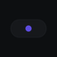
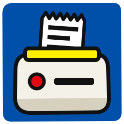

bc250-gateway
créée · carte PCB + éclair

memedl
créée · visage débile

ha-carel-pcoweb
créée · cadran Pompe à chaleur
hermes-adaptive-effort
existante · jauge vectorisée
hermes-compute-priority
créée · file prioritaire

hermes-hindsight-plus
créée · nœuds mémoire +

hermes-vitals-light
existante · logo du dépôt
hermes-whoami
existante · PNG du dépôt

tronic-printer-app
existante · icône du dépôt
